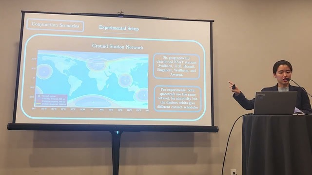
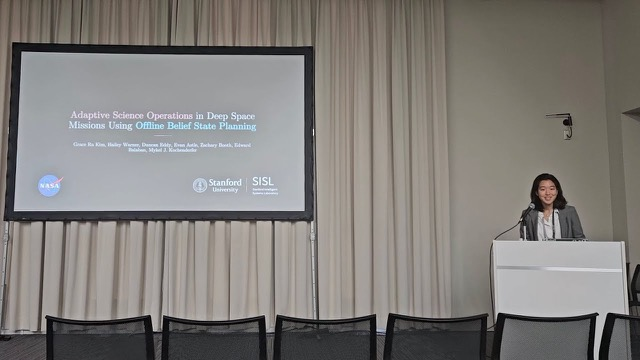

Talks
Conference presentations and invited talks.
-
Chance-Constrained Belief-Space Maneuver Planning for Autonomous Collision Avoidance Under Uncertainty
-

Semi-Decentralized Multi-Spacecraft Collision Avoidance under Communication Constraints
-
Scalable Ground Station Selection for Large LEO Constellations
-

Adaptive Science Operations in Deep Space Missions Using Offline Belief State Planning